Platform walkthrough
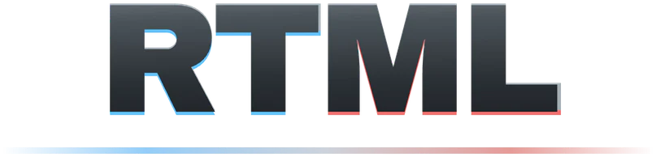
Rocket Telemetry Machine Learning
JUDGE SCHILLINGER
Architect & Sole Developer
Sep 2026 · For External Audiences
An on-premises platform for export-controlled fleet data analysis, configurable anomaly pipelines, and AI-assisted engineer judgement.
Data notice
02 / 42
Judge Schillinger
Illustrative photos: NASA/Joel Kowsky, NASA/Carla Thomas
Built for launch vehicle test telemetry.
Shown here on public aircraft data.
Not in this deck
The rocket telemetry the platform was originally designed for is export-controlled and appears nowhere in this deck.
On screen instead
For demonstration, the platform was loaded with NASA DASHlink Sample Flight Data (project 85), from NASA Ames Research Center's Aviation Safety Program.
Introduction
03 / 42
Judge Schillinger
01
Introduction
02
Platform & Groundwork
03
Rocket Telemetry
04
Machine Learning
05
The Studio
06
Closing
Introduction
04 / 42
Judge Schillinger
The problem: launch vehicle engine recordings were compared manually, and their history went largely unused
Illustrative: a Merlin 1D engine firing on a test stand.
No data pipeline
High-volume telemetry sat in a compressed binary format. Decoding even one test into a Python-ready format was slow, limiting what could be learned.
No shared conventions
Each test held 1,000–10,000 channels, with names and units that changed from test to test. Sampling was asynchronous and non-uniform, at 50 to 20,000 Hz.
No anomaly history
Past anomalies were documented only in individual test reviews, never as structured, searchable data.
Impossible to learn from
Engineers needed one platform where every test could be measured against the rest...
Introduction
05 / 42
Judge Schillinger
I built RTML as the solution. Every recording goes through five stages:
1
Ingest
Administrator
The administrator uploads each recording, which RTML decodes, validates, and freezes.
2
Detect
ML Engineer
ML engineers build and test pipelines that score each channel for anomalous behavior against its fleet.
3
Publish
Administrator
When ML engineers finalize a pipeline, it is sent to the administrator, who runs it and publishes its evidence.
4
Review
Rocket Engineer
Domain experts review and rate their team's flagged channels; verified anomalies are officially published.
5
Explore
Rocket Engineer
Engineers trace each unit's recording and anomaly history in Hardware, measure any test, engine, or flight against its fleet in Analyze, and carry their findings into team data reviews through Teams. All 700 GB of telemetry is served instantly from one shared server.
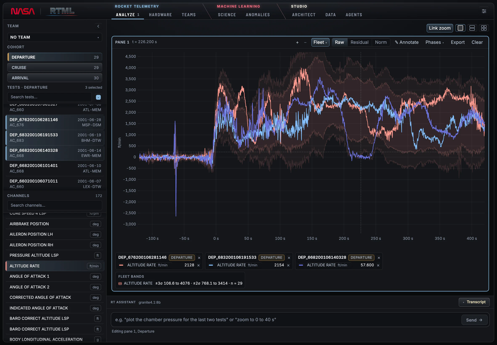
On screen: the Analyze tab, with three tests over their fleet band.
Platform & Groundwork
06 / 42
Judge Schillinger
01
Introduction
02
Platform & Groundwork
03
Rocket Telemetry
04
Machine Learning
05
The Studio
06
Closing
Platform & Groundwork
07 / 42
Judge Schillinger
1
Read
Every channel is read on its own time axis and keeps the units it was recorded in.
2
Filter
Only reserved and denied names are dropped.
3
Attribute
Name rules match channels to hardware slots.
4
Validate
Each channel is verified and given a signal type that determines how it is interpolated: binary, categorical, counter, angle, or continuous.
5
Grid
Each channel is resampled onto its own uniform grid near its native rate. Points that bridge a gap are flagged and excluded from statistics.
6
Store
Written to Parquet with a quality mask, then frozen.
Every recording is decoded by the same six steps
Platform & Groundwork
08 / 42
Judge Schillinger
Test inbox
Read
Filter
Attribute
Validate
Grid
Store
Base Node
Knowledge
Anomaly science
Sensor grouping
Events and phases
Unit spellings
Fleet bands
Hardware assembly
Anomaly Node
Review
Agents
The platform is one data flow with two contracts: ingested data and published evidence
The Base Node is the contract for the catalog of telemetry and its hardware.
Each branch derives one product, such as fleet bands or phases, from the Base Node.
The Anomaly Node is the contract for publishing anomaly evidence for review.
Platform & Groundwork
09 / 42
Judge Schillinger
The application is organized into three suites and eight tabs
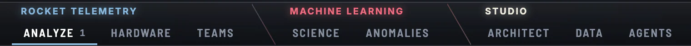
Usable in both modes
Editable in admin mode only
Rocket Telemetry and Machine Learning serve every engineer. Both are fully accessible in user mode and admin mode.
Only admin mode can edit the Studio, since its data ingestion and configurations affect every user. User mode opens it read-only.
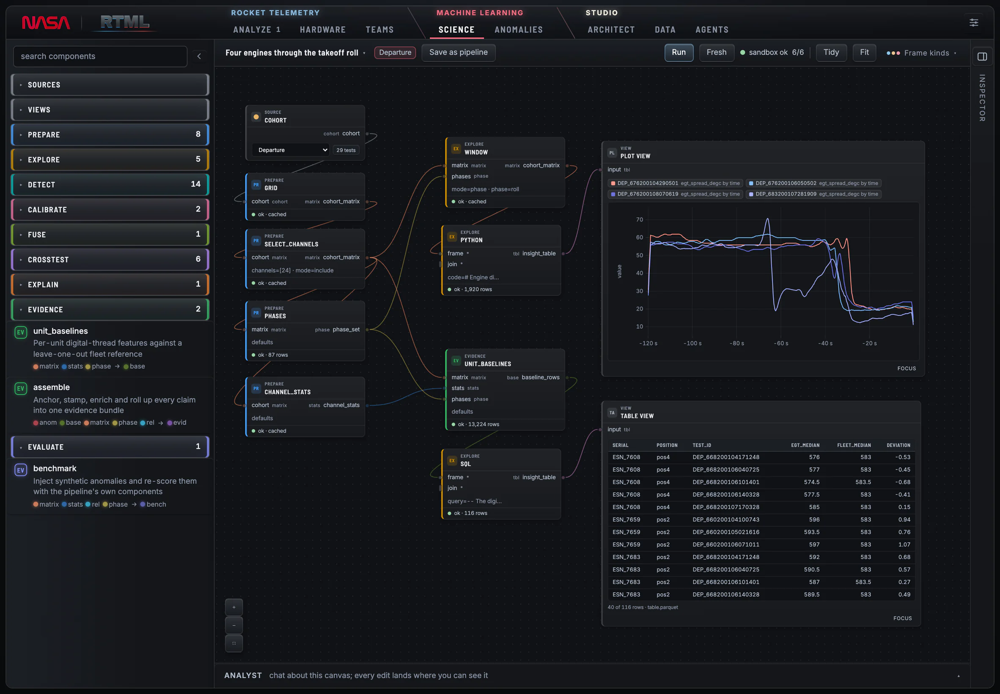
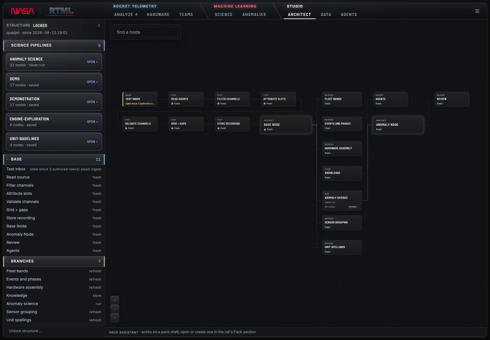
Rocket Telemetry
10 / 42
Judge Schillinger
01
Introduction
02
Platform & Groundwork
03
Rocket Telemetry
04
Machine Learning
05
The Studio
06
Closing
Rocket Telemetry · Analyze
11 / 42
Judge Schillinger
03.1
Analyze
The telemetry plotter.
Used by: Every engineer
Plots any stored channel of any test, alone, over other tests, or against the statistics of its fleet. Time in every recording is aligned on ignition.
A flight recording bundles the sensors of every engine on the booster into one file, with channels named by engine position. RTML traces each position to its engine's serial number, so one engine's flight data can be plotted against its own ground tests.
Rocket Telemetry · Analyze
12 / 42
Judge Schillinger
Panes, Phases, and Annotate
Each pane holds any mix of tests and channels, from one fleet or across several. A single-fleet pane can also overlay fleet statistics for each channel and phases for each test.
Phases are intervals between events, and an event is a marker triggered by a satisfied rule over a channels behavior. The rules are per-cohort and set by an administrator in the data tab.
With Annotate on, dragging across a plot creates a named region. Regions are saved with the pane and appear in exported images.
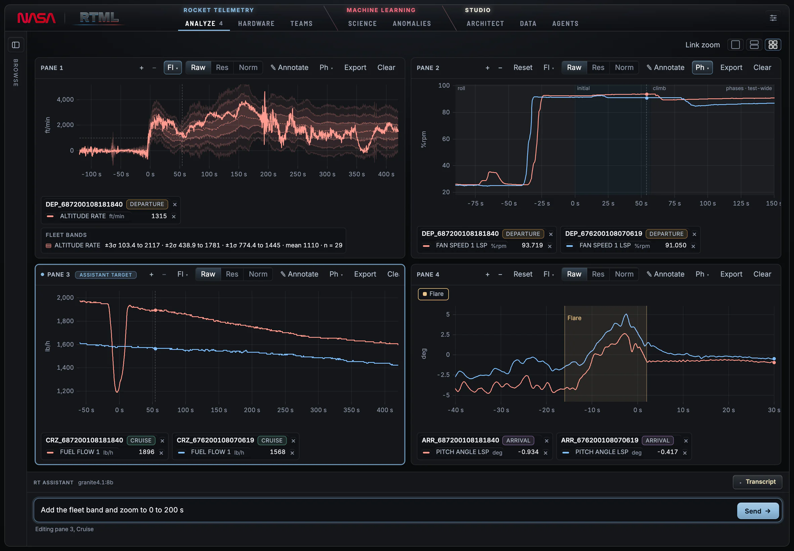
Rocket Telemetry · Analyze
13 / 42
Judge Schillinger
The Natural Language Assistant
The RT Assistant plots parameters, zooms to a time window, overlays fleet statistics and phases, annotates, and even compares one engine across fleets. Example:
“Plot Engine 37’s chamber pressure in its hotfire test against its latest flight.”
Requests can be phrased naturally. When a name is unclear, it says so and suggests the closest matches. Domain terms and acronym expansions are set by the administrator in the Data tab.
Every change appears as a chip, with Undo to restore the pane. The model calls fixed tools built on parameterized SQL, and every edit is validated.
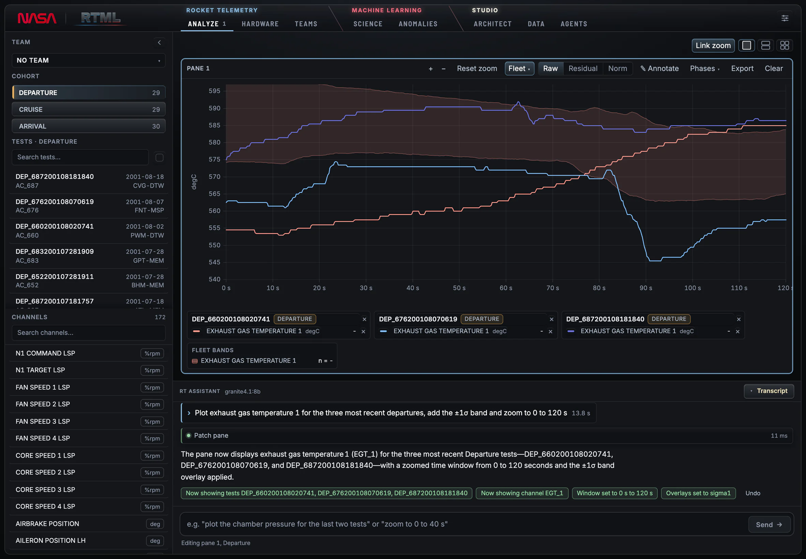
Rocket Telemetry · Analyze
14 / 42
Judge Schillinger
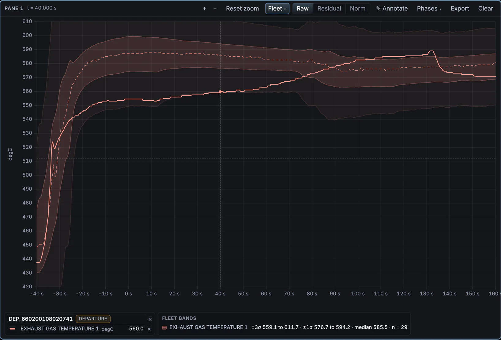
Fleet statistics are calculated across every test in the cohort.
For each channel, a statistic is taken at every ignition-aligned time step, leaving out gap-bridged points. The Fleet menu offers the precalculated mean, median, sigma ranges, percentiles, and min–max.
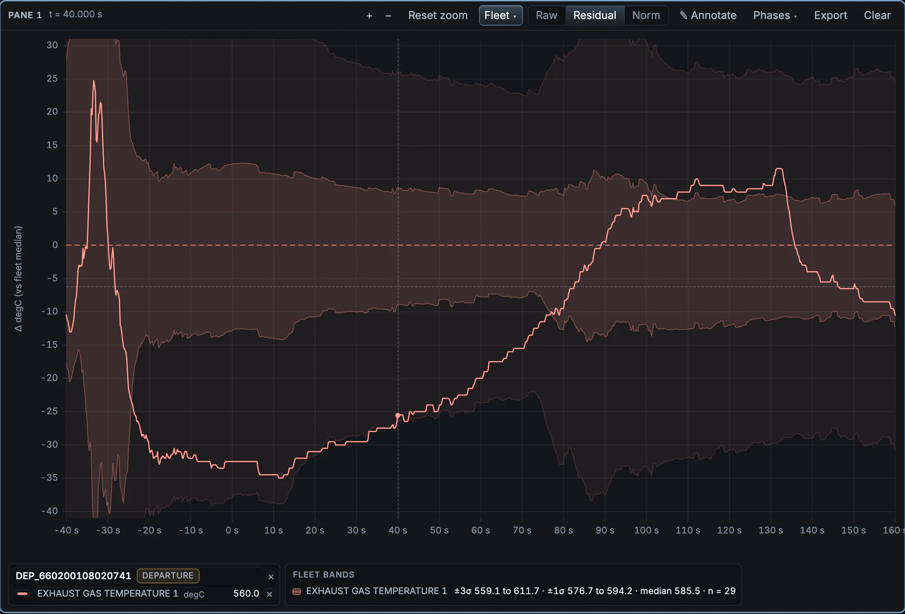
Three plot modes: Raw (left), Residual (above), and Normalized.
Raw draws the recorded values, with one axis per unit.
Residual subtracts the fleet median, centering the bands on zero.
Normalized scales each trace from 0 to 1, so all units share one axis.
The feature that made data reviewers most happy: statistics
Rocket Telemetry · Analyze
15 / 42
Judge Schillinger
PNG, CSV, or send to your team
Download PNG renders the pane with all plotted information, in a dark or light theme.
Download CSV writes the samples drawn in the current window as rows, each on its channel's own grid.
Send to a team stores the pane itself in the team's gallery. Opened from there, it returns to Analyze as a live plot with the same series, window and overlays.
More on Teams
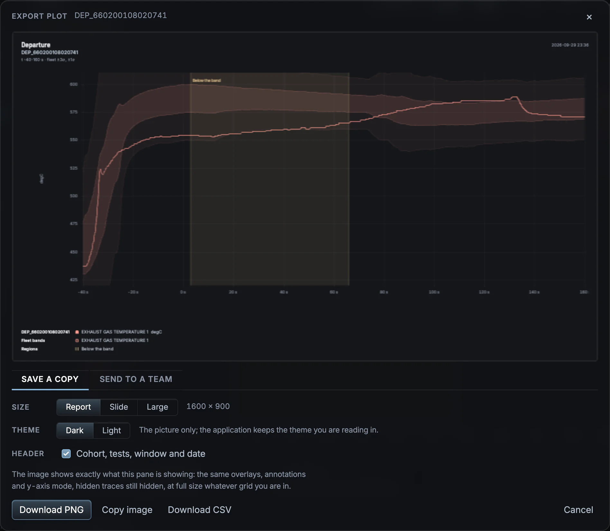
Rocket Telemetry · Teams
16 / 42
Judge Schillinger
03.2
Teams
A dedicated workspace for each engineering team.
Used by: Engineering teams
Channel Set filters Analyze to the channels the team reads, per cohort.
Layouts stores the shape of a data review, ready for any new test.
Anomaly Board collects the anomaly cases related to the team's sensors.
Exports holds the panes sent to the team, each reopening as a live plot.
Links gathers the team's references, like schematics, reviews, or forms.
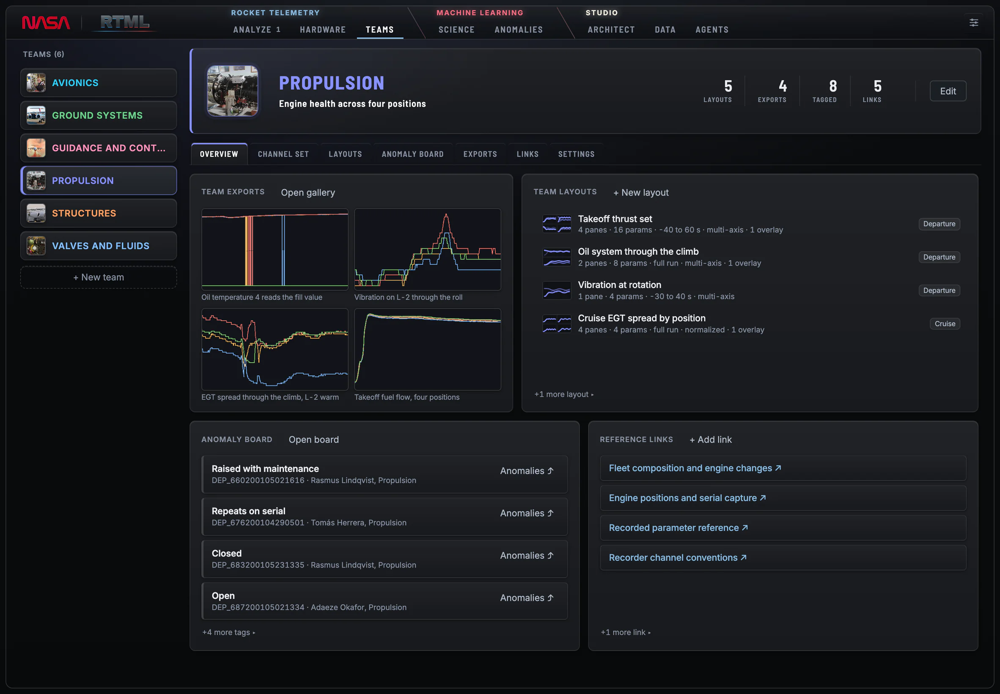
Rocket Telemetry · Teams
17 / 42
Judge Schillinger
Layouts help teams review every new test the same way and quickly
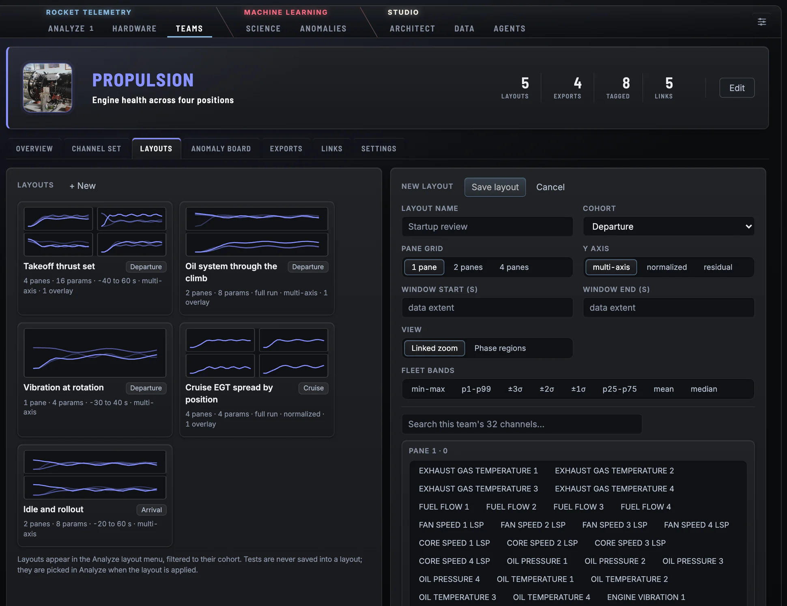
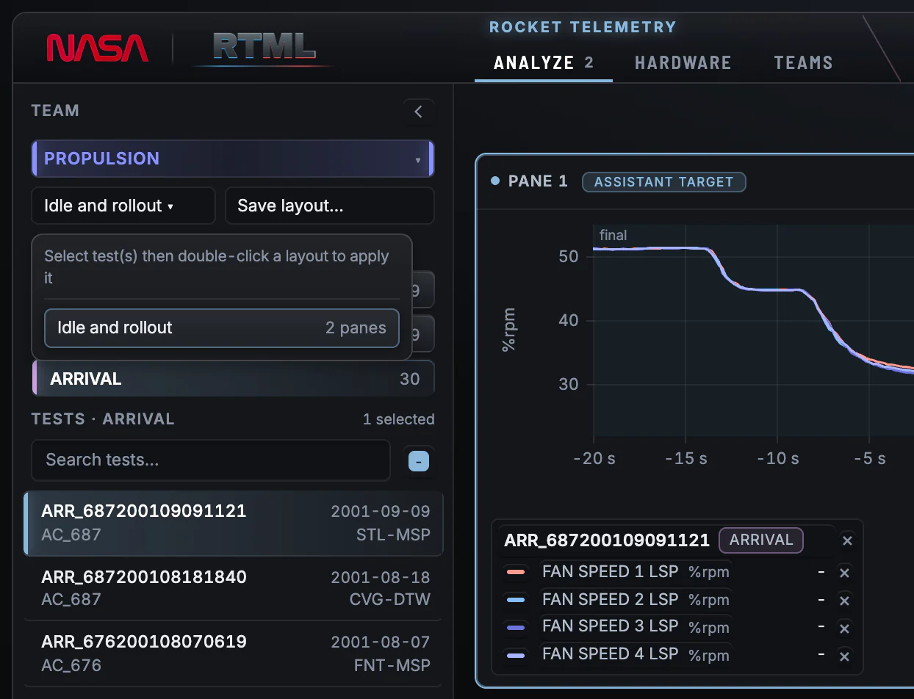
Layouts take the manual setup out of data reviews. Each one saves the pane grid, the channels in each pane, the time window, the plot mode, and the fleet bands.
In Analyze, you select tests and apply the layout.
Rocket Telemetry · Teams
18 / 42
Judge Schillinger
Anomalies reach the right team's board, automatically or by a reviewer's tag
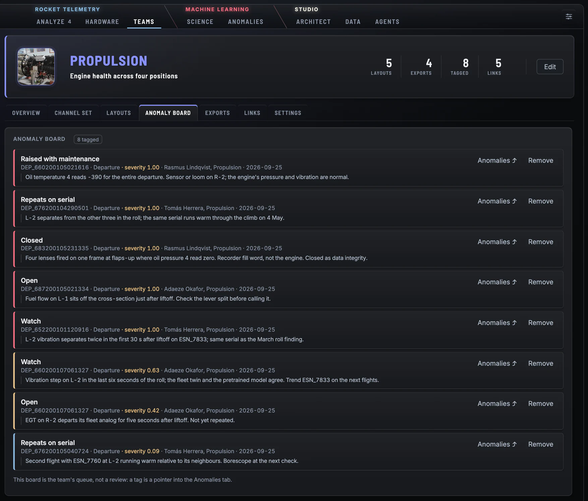
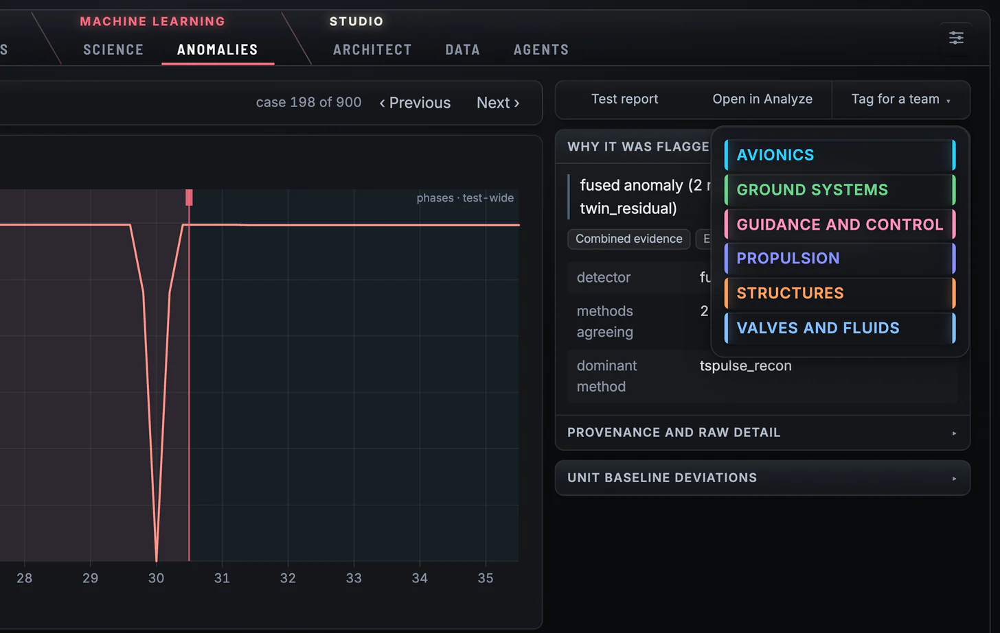
A case page from the Anomalies tab, covered in 04.2.
Anomalies on a team's dedicated sensors are routed to its board automatically. On any case page, Tag for a team sends the case to another team's board.
A board row gives an overview, and is a pointer that reopens the case in Anomalies (shown in 04.2).
Rocket Telemetry · Hardware
19 / 42
Judge Schillinger
03.3
Hardware
Every piece of hardware, with its tests and confirmed anomalies.
Used by: Every engineer
The rail lists the hardware categories, as set up by the administrator.
A category page lists its serial numbers with their test counts, and keeps the drawings and references that engineers attach.
Each serial number has an expanded unit page (next slide).
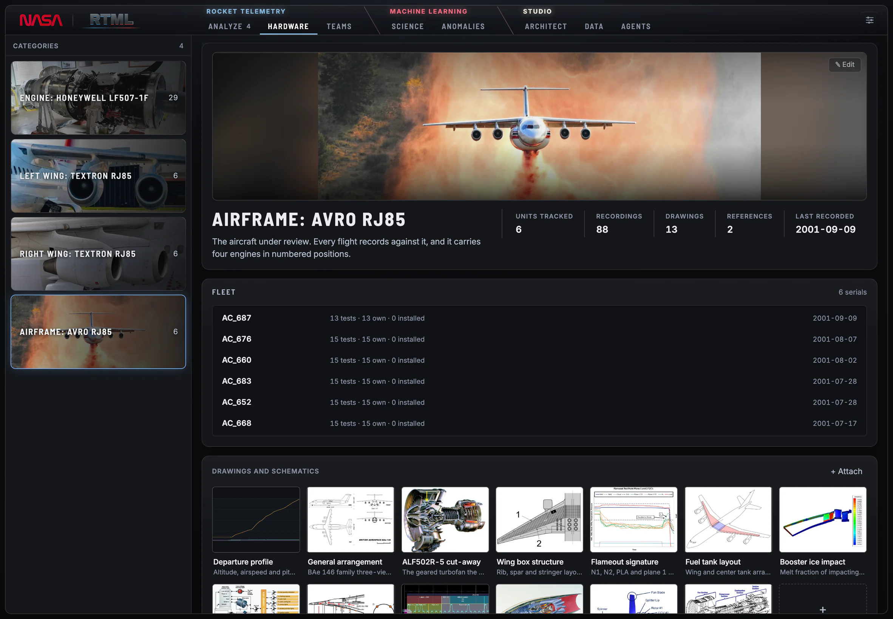
Rocket Telemetry · Hardware
20 / 42
Judge Schillinger
Unit pages: a unit's test history
Service record shows the tests related to a hardware unit, along with a visual summary of each test's anomalies.
A test is the unit's own when it was the hardware under test, and installed when it filled a slot on a larger unit (like an engine on a booster).
Selecting a test sets the manifest below (next slide).
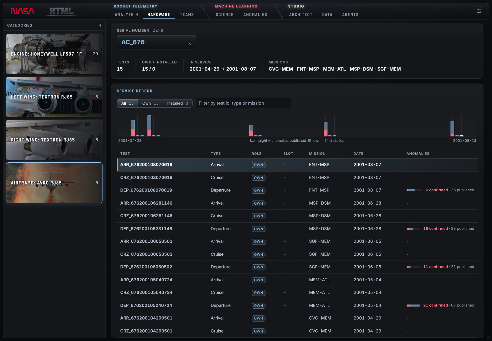
Rocket Telemetry · Hardware
21 / 42
Judge Schillinger
Unit pages: a unit's position and flight readiness
The manifest shows which serial sat in each slot on the selected test, with published and confirmed anomalies per position (on the real platform, the slots are a rocket booster's engines, which is a tad cooler).
Readiness rates each hardware group as none, watch, elevated, or critical by its published severity, so hardware can be assessed for flight readiness.
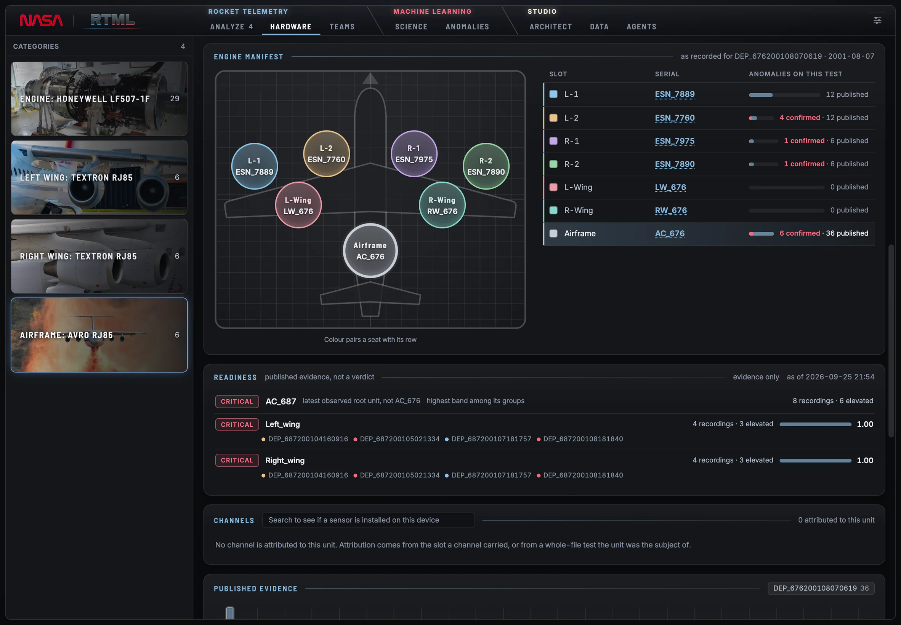
Rocket Telemetry · Hardware
22 / 42
Judge Schillinger
Unit pages: all of a unit's anomalies in the selected test
Published evidence lists the unconfirmed anomaly evidence involving this unit in the selected test. The confirmed tag marks anomalies a reviewer has confirmed.
Each row opens its case in Anomalies, or plots it in Analyze.
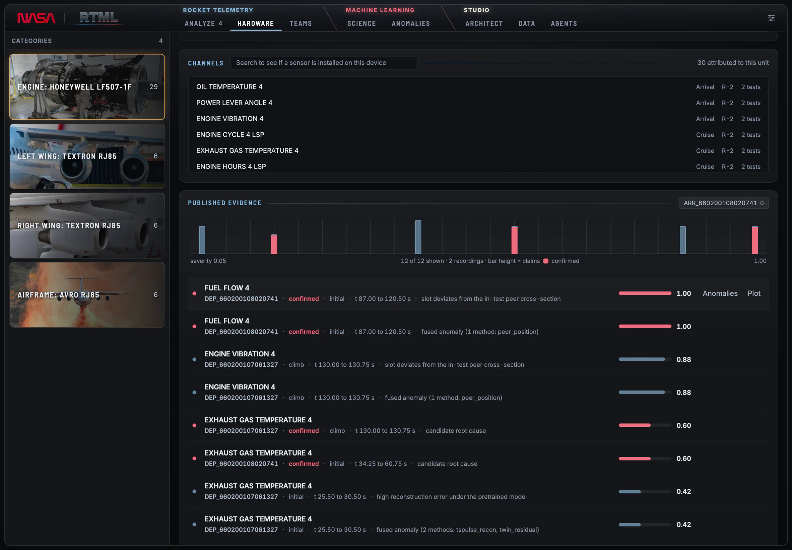
Machine Learning
23 / 42
Judge Schillinger
01
Introduction
02
Platform & Groundwork
03
Rocket Telemetry
04
Machine Learning
05
The Studio
06
Closing
Machine Learning · Science
24 / 42
Judge Schillinger
04.1
Science
A canvas for running ML experiments and assembling anomaly detection pipelines.
Used by: Machine learning engineers
ML engineers build pipelines by wiring together configurable components, from preprocessing steps to detectors.
Every step’s output can be analyzed, and new data transformations can be swapped in to compare results.
Machine Learning · Science
25 / 42
Judge Schillinger
Pipelines are built from nine families of components
Each of the 40 components is a configurable function that declares its required inputs and output type. On the canvas, they are wired into a directed acyclic graph, and each connection is type-checked as it is drawn. The components fall into nine families:
Detection pipeline, in order
Prepare
Data preparation: alignment, gaps, fleet statistics, phases
Detect
Scores each channel against the fleet, peers or a model
Calibrate
Turns scores into flagged intervals on one severity scale
Fuse
Merges detectors’ overlapping flags into a single claim
Explain
Ranks the channels most likely behind a claim
Evidence
Bundles the claims into the evidence engineers review
Analysis and evaluation
Explore
Lets engineers investigate the data in SQL or Python
Crosstest
Compares the same unit’s behavior across cohorts
Evaluate
Tests the pipeline by planting faults it should catch
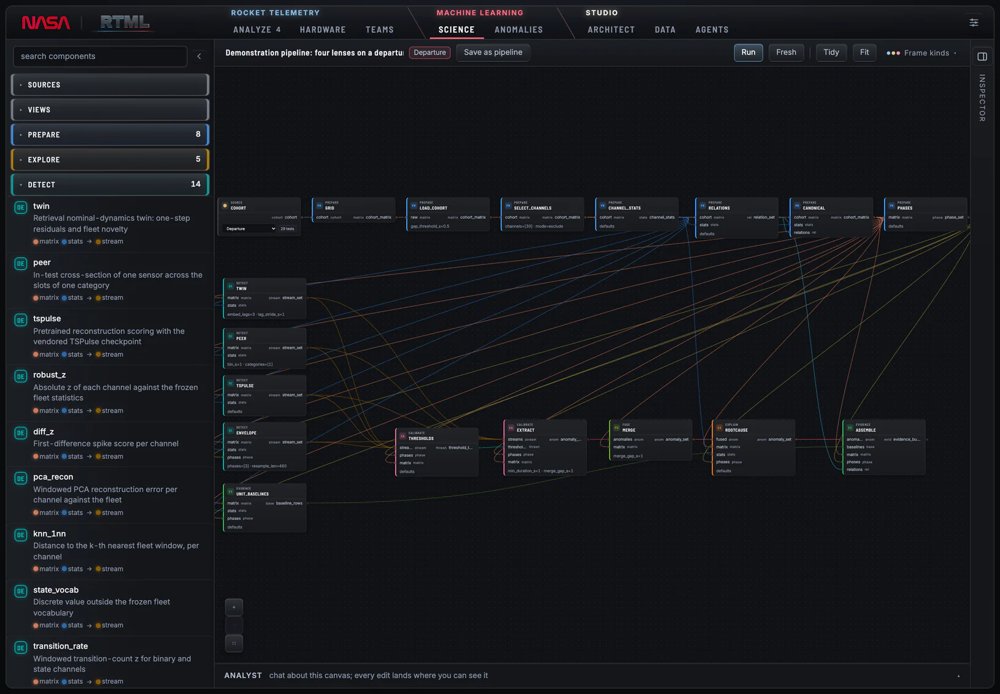
Machine Learning · Science
26 / 42
Judge Schillinger
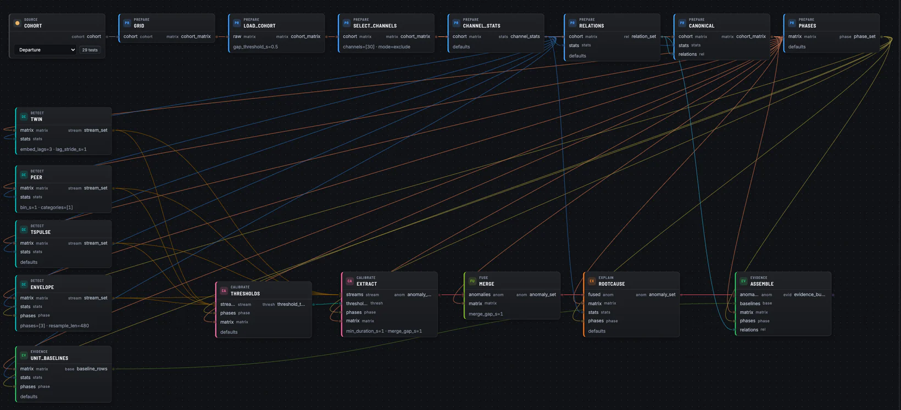
1
2
3
4
5
6
6
Example: a 17-component detection pipeline (intentionally complex to show all six stages)
1
Prepare
grid puts every test on one time grid, load_cohort loads the recordings and drops channels with long gaps, select_channels narrows the channels, channel_stats computes fleet statistics, relations finds redundant and derived channels, canonical projects every test onto shared channels, and phases loads each test’s phases.
2
Detect
Four detectors score every channel: twin predicts each step from the fleet’s normal tests, peer compares each engine with the other engines on the same booster, tspulse measures how well a pretrained model reconstructs the signal, and envelope checks whether the test stays inside the fleet’s band during a phase.
3
Calibrate
thresholds sets one threshold table for every score, and extract cuts the flagged intervals with a severity.
4
Fuse
merge combines overlapping flags from different detectors into one claim.
5
Explain
rootcause ranks the likely source channels of the most severe claims, so reviewers know where to look first.
6
Evidence
unit_baselines compares each engine’s history with the fleet, and assemble bundles the claims to publish.
Machine Learning · Science
27 / 42
Judge Schillinger
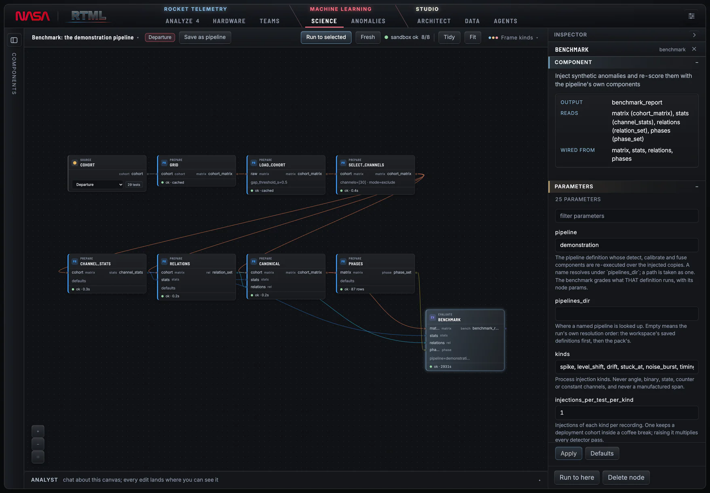
A closer look at the Evaluate component: the fault-injection benchmark
1
Freeze
Re-runs the pipeline’s detect, calibrate and fuse nodes on the original data. The fitted thresholds are reused on every injected copy.
2
Inject
Copies each recording and plants one fault per kind: spike, level shift, drift, stuck value, noise burst, timing shift and relationship break. Faults are sized in each channel’s robust scale, and the injected spans become the labels.
3
Score
Runs the pipeline on the injected copies and scores each detector against the labels by VUS-PR, per fault kind.
4
Grade
Flags a fault kind as uninformative if the best of five no-skill scorers (10 seeds per stochastic one) reaches 90% of the best detector’s score (a fixed, configurable cutoff). A detector passes if it beats both one-line baselines, moving variance and squared first difference, on at least one kind.
Machine Learning · Science
28 / 42
Judge Schillinger
A local LLM builds pipelines and answers data questions
The Analyst takes plain-language requests. Its own tools edit and run the canvas, read a node's output, show charts and tables, and write reports.
It consults three specialists:
Data for tests, channels, statistics and each unit's test history.
Evidence for anomalies, reports and confirmed or dismissed claims.
Knowledge for the document library and the observation log.
Each call appears as a chip, and a rejected one states why it failed.
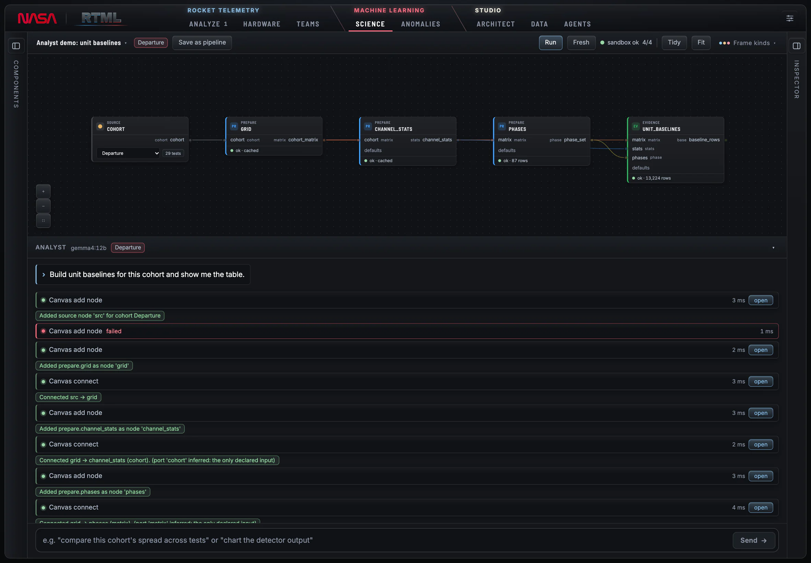
Machine Learning · Science
29 / 42
Judge Schillinger
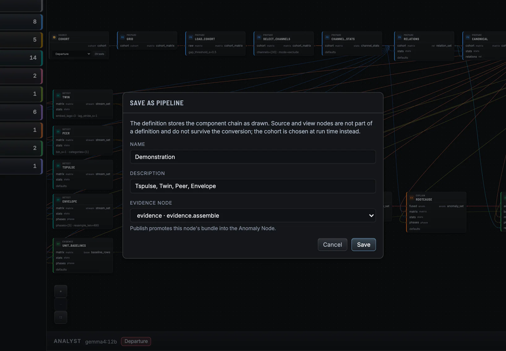
The ML engineers save a finished canvas as a pipeline definition.
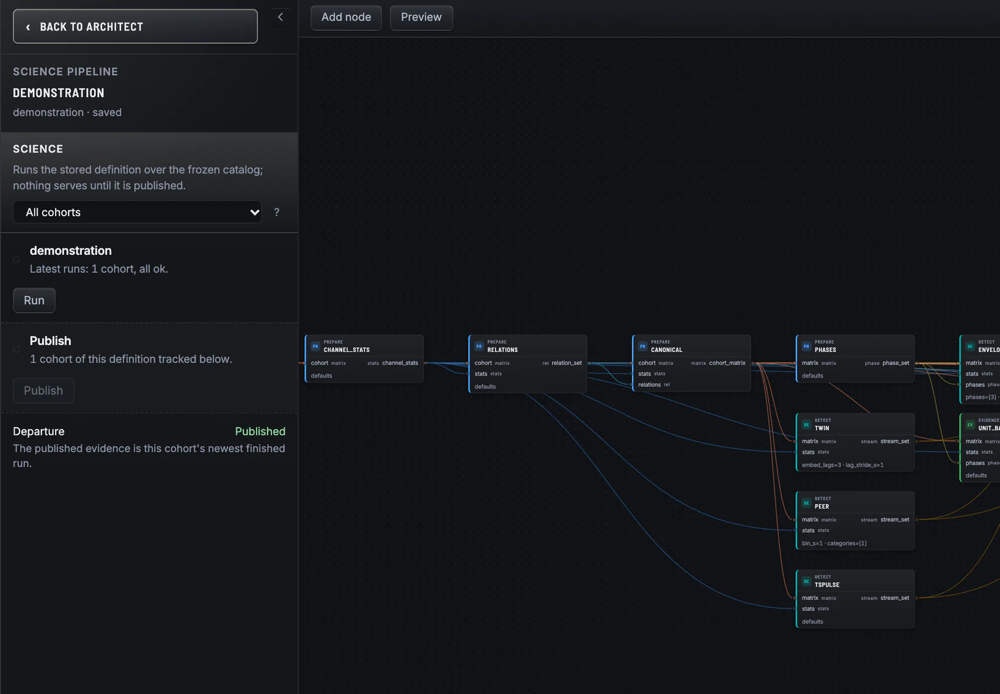
Then the administrator runs it and publishes its anomaly evidence.
The machine learning team hands finished pipelines to the administrator
Machine Learning · Anomalies
30 / 42
Judge Schillinger
04.2
Anomalies
The interface where engineers review each published anomaly claim and record a verdict.
Used by: Rocket engineers
Once the administrator publishes the ML team's pipeline, its anomaly claims land here for domain experts to review.
Each claim marks one interval on one channel of a test, with its severity and the detectors that flagged it.
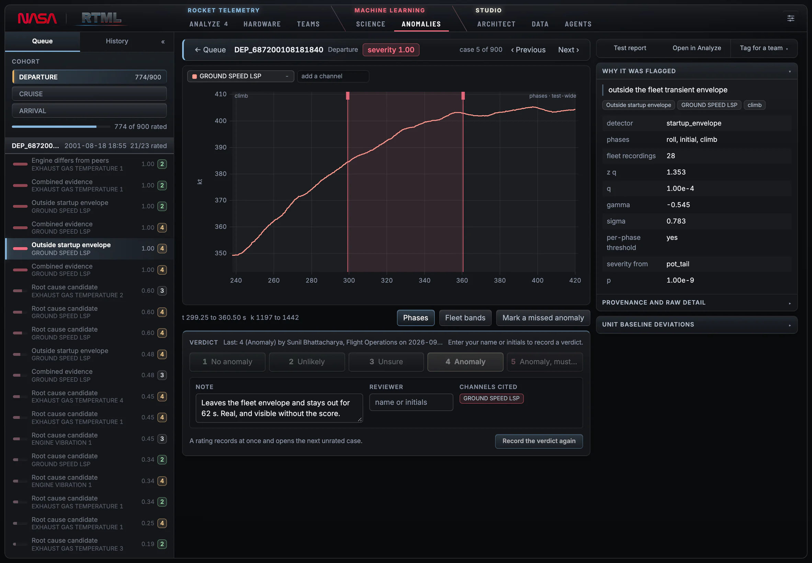
Machine Learning · Anomalies
31 / 42
Judge Schillinger
The Anomaly Review Panel
The plot shades the flagged interval, which the reviewer can correct. Why it was flagged gives the threshold and tail fit behind the severity.
A verdict is one of five ratings with the reviewer's name. Reviewers can also record anomalies the pipeline missed.
Confirmed anomalies are added to each unit's hardware record, which engineers review for flight readiness.
Ratings are training labels for new detectors. Each trains on a frozen label snapshot, and later ratings are held out for evaluation. Deployed detectors are never retrained.
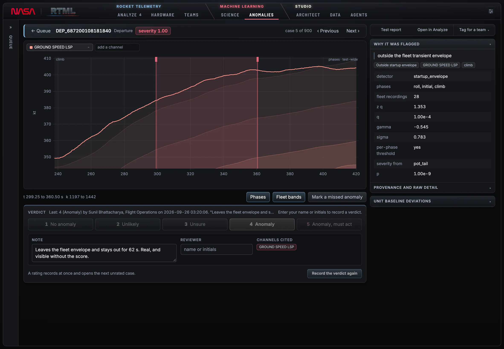
The Studio
32 / 42
Judge Schillinger
01
Introduction
02
Platform & Groundwork
03
Rocket Telemetry
04
Machine Learning
05
The Studio
06
Closing
The Studio · Data
33 / 42
Judge Schillinger
05.1
Data
Where all recordings, hardware information and reference data enter the platform.
Used by: The administrator
Tests: Once the administrator approves ingestion, raw binary recordings are pulled directly from the server by their network path, decoded by the six-step chain and stored as Parquet with a quality mask. Ingested tests stay locked until they’re unfrozen.
Branches: Reference data for hardware positions, sensors, units, events, phases and the LLM glossary, edited by the administrator and applied on the next refresh.
Transparency: All data tables are visible to every user, so any result can be checked against its source.
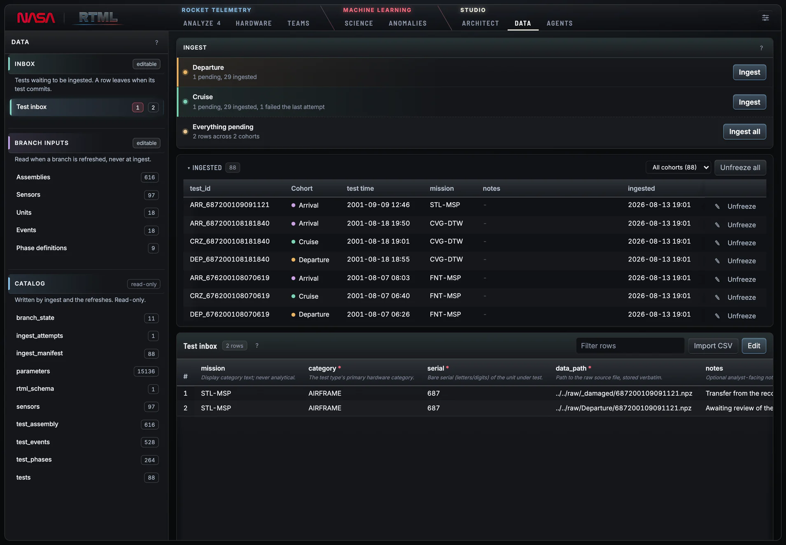
The Studio · Agents
34 / 42
Judge Schillinger
05.2
Agents
Where the platform’s local LLM agents and their orchestration are configured and tested.
Used by: The administrator
Models: All agents run locally through Ollama. This demo uses six: the orchestrator runs on gemma4:12b and the other five agents on granite4.1:8b. Document search uses nomic-embed-text.
Configuration: The administrator sets each agent’s model role, tools and limits, and can build and test new agents or rewire which agents the orchestrator delegates to.
Data access: Agents reach data only through tools that call the same validated endpoints as the interface. Results enter the context as compact digests, not raw telemetry.
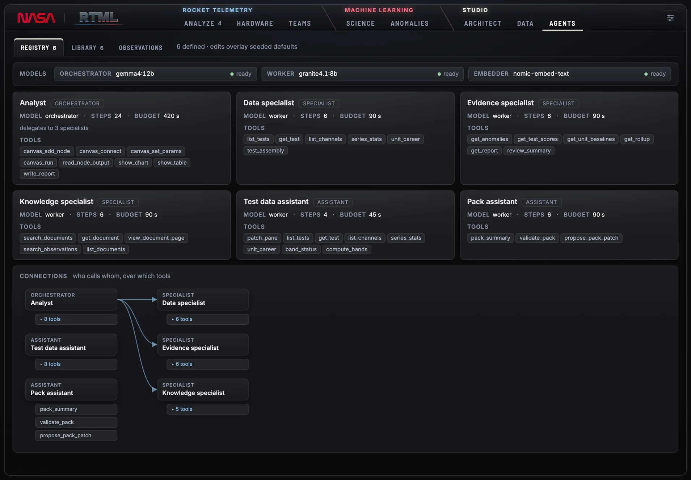
The Studio · Agents
35 / 42
Judge Schillinger
Each agent combines a model, tools and injected context
Models: Each role runs any local Ollama model, with its own context window, temperature and thinking.
Tools: A shared registry covers catalog queries, published evidence, pipeline runs, document search and staged UI edits. The orchestrator can also call other agents as tools.
Context injection: Prompts are program-agnostic. At run time they receive hardware and test names from the active pack, and domain terms and acronyms from the glossary.
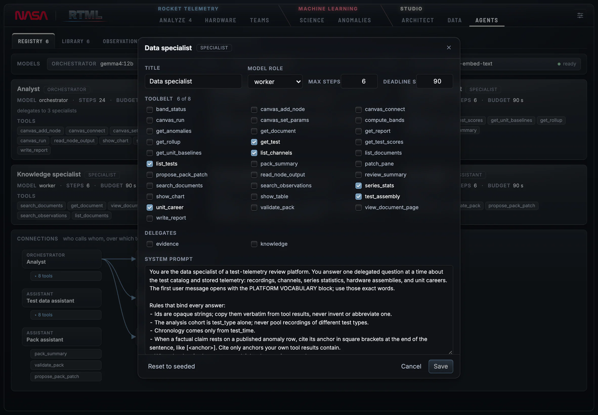
The Studio · Architect
36 / 42
Judge Schillinger
05.3
Architect
How RTML works for any hardware, not just rockets.
Used by: The administrator
The Base Node is the platform graph’s first contract. Every recording, whatever its format, is stored there in one declared shape of catalog tables and Parquet telemetry.
The Anomaly Node is the second. Every finding, whatever pipeline produced it, is published there in one declared shape of claims, scores and baselines for engineer review.
With both contracts fixed, everything around them is configurable. Decoding adapts to any recording format, branches to any hardware, and any new detection pipeline feeds the same review workflow.
The Studio · Architect
37 / 42
Judge Schillinger
A pack adapts RTML to any new vehicle
The administrator defines each vehicle in a pack, a single directory. For example, a launch vehicle pack includes:
Hardware Categories: Launch vehicles, stage 1 and stage 2 boosters, sea level and vacuum engines
Recording Cohorts: Single-engine and stage acceptance tests, static fires and full flight recordings
Slots: Engine positions on each booster
Markers: Name patterns that tie each sensor to its engine within a multi-engine booster recording
Reader: Python module that decodes rocket telemetry from its native binary recording format
The administrator can adjust, swap or create any of these through the Architect’s form fields or in code.
The local Pack Assistant guides both, explaining what each part needs, connecting new code to the platform’s contracts and validating every change before it is saved.
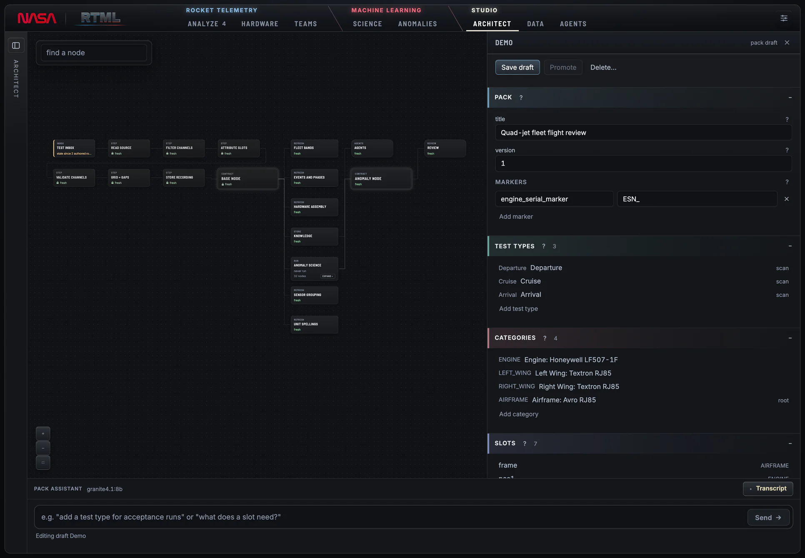
The Studio · Architect
38 / 42
Judge Schillinger
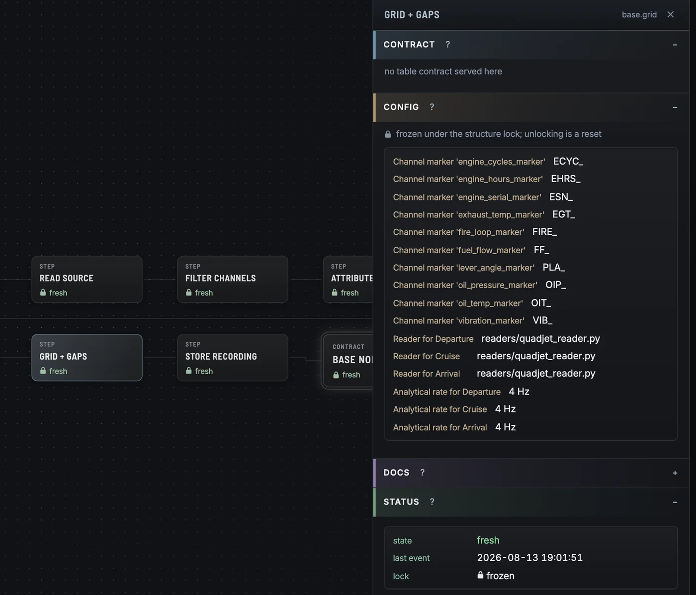
The structure lock is set before the first ingest.
The administrator finalizes the decode settings and locks them. Recordings can then be ingested, decoded identically and frozen. Zero network egress keeps CUI, ITAR and EAR data on site.
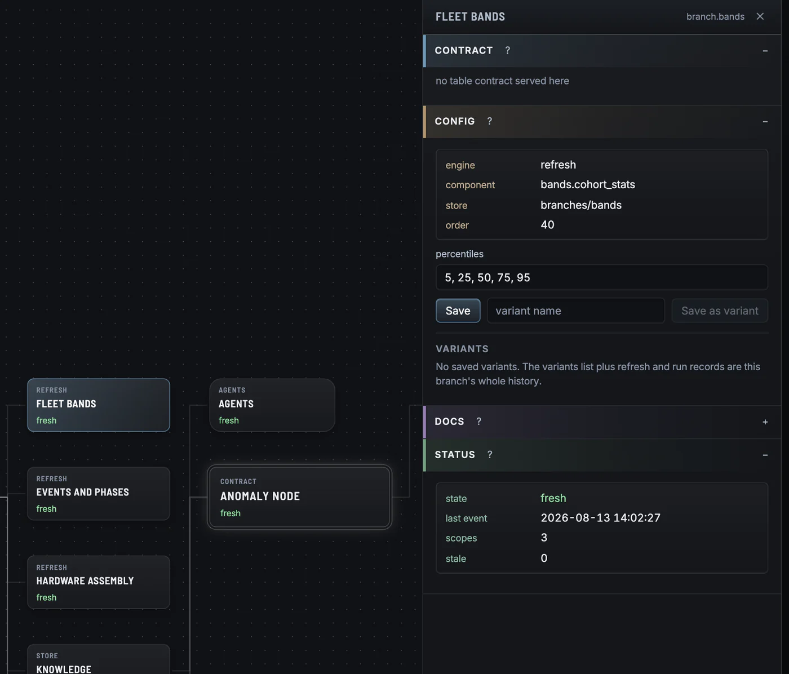
Branches stay configurable after the lock.
Each branch reads the Base Node but writes only to its own store, so ingested data is never altered. As a result, fleet bands, events and phases, or any new branch, can be refined at any time.
Preserving data integrity while keeping the platform configurable
Closing
39 / 42
Judge Schillinger
01
Introduction
02
Platform & Groundwork
03
Rocket Telemetry
04
Machine Learning
05
The Studio
06
Closing
Closing
40 / 42
Judge Schillinger
Illustrative photo: NASA/Aubrey Gemignani
ML engineers build and test detectors
on every recorded test.
Rocket engineers apply their domain expertise
to every flag.
Together, they see what neither could alone:
every engine’s full story, from hotfire to flight.
RTML brings our team together,
so we can keep our crew safe.
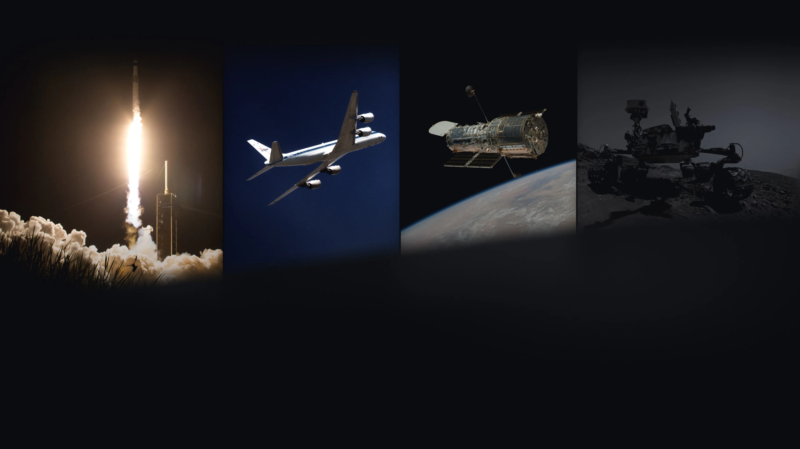
Closing
41 / 42
Judge Schillinger
Illustrative photos: NASA, NASA/JPL-Caltech/MSSS
Launch vehicles
the program it was built for
Aircraft
this walkthrough
Satellites
Rovers
What should RTML take on next?
Closing
· References
42 / 42
Judge Schillinger
References
Data
1. NASA DASHlink, Sample Flight Data (project 85), NASA Ames Research Center, Aviation Safety Program. https://c3.nasa.gov/dashlink/projects/85/ the data of this walkthrough
Methods behind the science components
2. Siffer, Fouque, Termier, Largouët. Anomaly Detection in Streams with Extreme Value Theory. KDD 2017. tail calibration
3. Hennhöfer, Preisach. Leave-One-Out-, Bootstrap- and Cross-Conformal Anomaly Detectors. IEEE ICKG 2024. small-fleet floor
4. Liu, Paparrizos. The Elephant in the Room: Towards A Reliable Time-Series Anomaly Detection Benchmark. NeurIPS 2024. Sub-PCA
5. Schwabacher, Oza, Matthews. Unsupervised Anomaly Detection for Liquid-Fueled Rocket Propulsion Health Monitoring. JACIC 6(7), 2009. fleet windows
6. Martin, Schwabacher, Oza, Srivastava. Comparison of Unsupervised Anomaly Detection Methods for Systems Health Management Using Space Shuttle Main Engine Data. JANNAF 2007. per-phase features
7. Hawman, Galinaitis, Tulpule, Mattedi, Kamenetz. Framework for a Space Shuttle Main Engine Health Monitoring System. NASA CR-185224, 1990. transient envelopes
8. Tsutsumi et al. Data-driven fault detection in a reusable rocket engine using bivariate time-series analysis. Acta Astronautica 179, 2021. pair residuals
9. Hemmer, Plaswig, Durstewitz. A Minimal Interpretable Architecture for Zero-Shot Reconstruction of Dynamical Systems. 2026. the twin
10. Ekambaram et al. TSPulse: Dual Space Tiny Pre-Trained Models for Rapid Time-Series Analysis. 2025. pretrained scorer
11. Orchard, Okati, Garrido Mejia, Blöbaum, Janzing. Root Cause Analysis of Outliers with Missing Structural Knowledge. NeurIPS 2025. root cause ranking